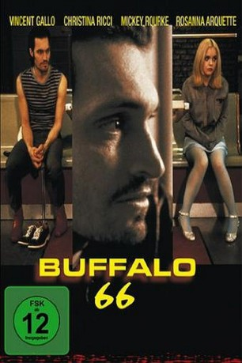
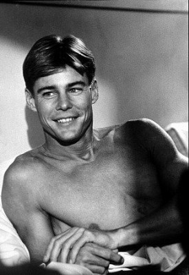

#5482 Buffalo '66
 
 IMDB-Wertung: 7.5 / 10
IMDB-Wertung: 7.5 / 10  Tomatometer: 76
Tomatometer: 76  Metascore: 0
Metascore: 0 
Die Geschichte eines jungen Mannes, der nach fünf Jahren, die er unschuldig im Gefängnis verbracht hat, eine junge Frau entführt, um sie seinen Eltern als Ehefrau vorzuführen, damit diese ihn nicht als Versager und Kriminellen ansehen. Doch die Eltern begegnen ihm mit derselben Lieblosigkeit und Ignoranz, mit der sie ihn seit seiner Jugend behandeln. Interessantes Regiedebüt des Musikers, Models und Schauspielers Vincent Gallo. In Rückblenden, die sich stilistisch kunstvoll in die Handlung der Jetztzeit einfügen, vervollständigen die Bilder aus der Jugend die Trostlosigkeit der Gegenwart, die sich äußerlich in einer statischen und kargen Bildgestaltung verdeutlicht.
Jahr: 1998
Dauer: 109 Minuten
FSK: 12
Land: USA Studio: Lions Gate FilmsTonspuren: DTS - ,
Untertitel: Deutsch,
Auflösung: 1080p (1920x1040) Größe: 8939 MB
Genre: Drama, Komödie, Krimi, Liebe
Regisseur: Vincent Gallo
Drehbuch: Stefan Betz
Soundtrack:
Darsteller:
 Vincent Gallo als Billy Brown
Vincent Gallo als Billy Brown Christina Ricci als Layla
Christina Ricci als Layla Ben Gazzara als Jimmy Brown
Ben Gazzara als Jimmy Brown Mickey Rourke als The Bookie
Mickey Rourke als The Bookie Rosanna Arquette als Wendy Balsam
Rosanna Arquette als Wendy Balsam-  Jan-Michael Vincent als Sonny
 Anjelica Huston als Jan Brown
Anjelica Huston als Jan Brown Kevin Pollak als TV Sportscaster
Kevin Pollak als TV Sportscaster- Alex Karras als TV Sportscaster
- Jack Hunter als The Gas Station Clerk
 Kevin Corrigan als Rocky the Goon , uncredited
Kevin Corrigan als Rocky the Goon , uncredited- John Sansone als Little Billy
- Manny Fried als The Donut Clerk
- John Rummel als Don Shanks
- Bob Wahl als Scott Woods
- Penny Wolfgang als The Judge
- Anthony Mydcarz als The Motel Clerk
- Michael Maciejewski als The Guy in the Bathroom
- Jack Claxton als The Denny's Host
- Dominic Telesco als The Prison Guard
- Carl Marchi als The Cafe Owner
- Kim Krah als The Denny's Waitress
- Julius Digennaro als The Info Booth Clerk
- Terry Braunstein als The Tap Teacher
- Norma Gelose als The Bus Station Woman
- Jamie King als Tap Dance Kid
- Janel King als Tap Dance Kid
- Ghennifer Dennis als A Beautiful Scott Woods Sexxotic Dancer
- Erin Markle als A Beautiful Scott Woods Sexxotic Dancer
- Valeria Hildebrandt als A Beautiful Scott Woods Sexxotic Dancer
- Michelle McCluskey als A Beautiful Scott Woods Sexxotic Dancer
- Terese Lenandowski als A Beautiful Scott Woods Sexxotic Dancer
- Kim Bradway als A Beautiful Scott Woods Sexxotic Dancer
- Dana Thompson als A Beautiful Scott Woods Sexxotic Dancer
- Karen Sitter als A Beautiful Scott Woods Sexxotic Dancer
- Michelle Koninick als A Beautiful Scott Woods Sexxotic Dancer
- Amy Jakabowski als A Beautiful Scott Woods Sexxotic Dancer
- Tara Thompson als A Beautiful Scott Woods Sexxotic Dancer
- Joey Giambra als Man in Donut Shop , uncredited
Datei: X:\1998\Buffalo '66 (1998, FSK12, 1920x1040).mkv seit 06.02.2017
Festplatte: HD 1996-2002
 Es gibt insgesamt 86 Filme in der Gruppe '1998'
Es gibt insgesamt 86 Filme in der Gruppe '1998'